CONSULT OUR EXPERTS
FREE DAILY HOROSCOPE
Find out what the stars have in store for you each day! With our free daily horoscope, you'll receive accurate and insightful predictions to help you make the most of each day. Our team of expert astrologers has dedicated years of study and practice to bring you valuable advice on love, work, health and more. Don't let opportunities pass you by unnoticed, consult your daily horoscope with us and start your day with the knowledge you need to make informed decisions and achieve your goals.
Select your zodiac sign


 



Write your email to receive your horoscope reading
Understanding the Daily Horoscope
Daily horoscopes are a centuries-old practice based on the interpretation of the position and movement of the planets, stars and other celestial bodies in relation to the zodiacal signs. Every day, astrologers and experts in the field make predictions and advice based on this astral information, which is believed to influence various aspects of human life.
Each zodiac sign is assigned certain characteristics and tendencies, and the daily horoscope uses these characteristics as the basis for predictions. Through observation of the position of the stars at the time of birth and their subsequent movement, astrologers create forecasts covering areas such as love, career, health and interpersonal relationships.
It is important to remember that the daily horoscope is a reflective tool and not an exact science. While many people find value and guidance in these predictions, it is essential to take them with a critical spirit and understand that destiny is largely in our own hands. The interpretation of the daily horoscope may vary according to the school of thought and individual practice of the astrologer, so it is advisable to explore different sources and approaches to get a more complete picture.
The Reliability of the Daily Horoscope
The daily horoscope is a tool used by many people to gain guidance and insight into their daily lives. However, the reliability of these predictions can vary depending on several factors. First, the accuracy of the daily horoscope depends largely on the skill and experience of the astrologer who prepares it. An astrologer with a deep knowledge of astrology and an ability to correctly interpret planetary movements can provide more accurate and useful predictions.
In addition, the reliability of the daily horoscope can also be affected by the subjective interpretation of astrological aspects and the application of these principles to daily life. While some astrologers may base their predictions on scientific methods and objective observations, others may adopt a more intuitive approach based on personal experience. This variability in methods of interpretation can influence the perceived reliability of the daily horoscope for different people.
Ultimately, the reliability of the daily horoscope is an individual and subjective matter. Some people may find the predictions to be surprisingly accurate and relevant to their lives, while others may consider them to be mere generalizations or entertainment. It is important to remember that the daily horoscope is a tool for personal reflection and exploration, and each person is free to interpret it according to his or her own experience and beliefs.